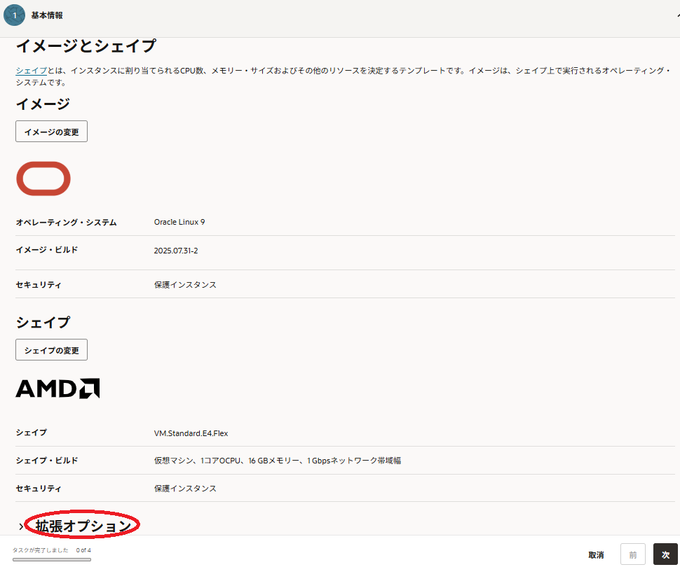
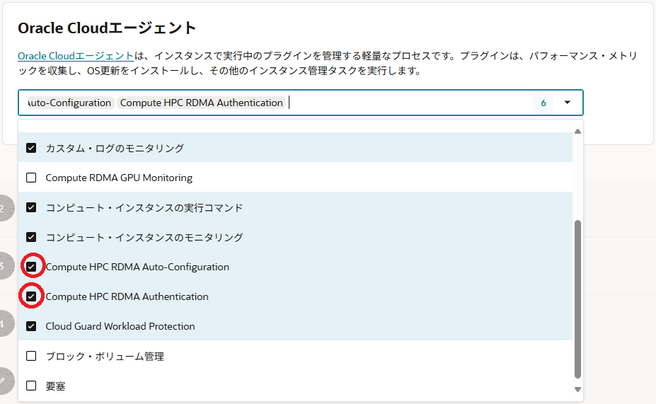

クラスタ・ネットワーク 対応シェイプを使用するインスタンスは、デプロイ時のイメージに Oracle Linux をベースOSとする クラスタネットワーキングイメージ を使用することで、 クラスタ・ネットワーク 接続に必要なソフトウェアのインストールやセットアップ等の作業を大幅に簡素化することが可能です。
本テクニカルTipsは、この クラスタ・ネットワーキングイメージ を使用してインスタンスを クラスタ・ネットワーク に接続する方法を解説します。
注意 : 本コンテンツ内の画面ショットは、現在のOCIコンソール画面と異なっている場合があります。
0. 概要
クラスタ・ネットワーク への接続は、使用するインスタンスが以下の接続条件を満たし、このインスタンスデプロイ後に以下の接続処理を完了する必要があります。
[接続条件]
- クラスタ・ネットワーク 対応シェイプ（ ここ を参照）を使用している
- クラスタ・ネットワーク のデプロイに伴ってデプロイされている
- クラスタ・ネットワーク 接続に必要な以下ソフトウェアがインストールされている
- Mellanox OFED
- WPAサプリカント（※1）
- 802.1X認証関連ユーティリティソフトウェア
- クラスタ・ネットワーク 設定ユーティリティソフトウェア
※1）クラスタ・ネットワーク は、インスタンスが接続する際802.1X認証を要求しますが、この処理を行うクライアントソフトウェアがWPAサプリカントです。802.1X認証の仕組みは、 ここ のサイトが参考になります。
[接続処理]
- クラスタ・ネットワーク との802.1X認証（接続条件 3-3. が実施）
- クラスタ・ネットワーク 接続用ネットワークインターフェース作成（接続条件 3-4. が実施）
ここで 接続条件 3. は、全てのソフトウェアを予めインストールした クラスタネットワーキングイメージ が用意されており、これを利用することでそのインストールを省略することが可能です。
この クラスタ・ネットワーキングイメージ は、 接続条件 3-3. と 接続条件 3-4. のユーティリティソフトウェアの提供方法について、 Oracle Cloud Agent （以降 OCA と呼称）プラグインを使用するイメージと個別RPMとしてインストールされているイメージが存在し、これらのユーティリティソフトウェアが実施する 接続処理 1. と 接続処理 2. の実行方法が異なります。
クラスタネットワーキングイメージ を適切に選択する方法は、 OCI HPCテクニカルTips集 の クラスタネットワーキングイメージの選び方 を参照してください。
下表は、 OCA プラグインを使用する場合と個別RPMの機能を使用する場合の クラスタ・ネットワーク 接続方法をまとめています。
| 使用する OCA プラグイン | 使用するRPM・ Systemdサービス |
使用する クラスタ・ネットワーキングイメージ 名 の先頭（※1） |
|
|---|---|---|---|
| OCA プラグイン |
Compute HPC RDMA Authentication Compute HPC RDMA Auto-Configuration |
oracle-cloud-agent oracle-cloud-agent-updater |
OracleLinux-8-OCA OracleLinux-7-OCA |
| 個別RPM | - | oci-cn-auth oci-cn-auth-renew oci-rdma-configure oci-hpc-dapl-configure oci-hpc-mlx-configure |
OracleLinux-8-RHCK OracleLinux-7-RHCK |
※1）詳細は、 OCI HPCテクニカルTips集 の クラスタネットワーキングイメージの選び方 を参照してください。
また下表は、それぞれの接続方法の利得表で、自身の要件に合わせてどちらの方法を使用するかを判断します。
特別な要件が無ければ、 OCA プラグインを使用する方法を選択します。
| 利点 | 欠点 | |
|---|---|---|
| OCA プラグイン |
インスタンスデプロイ後に接続完了 | OCA 常駐によるCPUリソース消費（※2） |
| 個別RPM | OCA 停止によるCPUリソース消費抑止が可能（※2） | インスタンスデプロイ後に接続処理が必要 |
※2）計算/GPUノード上で OCA がCPUリソースを消費するため、これによるアプリケーションのスケーラビリティへの影響を指しています。この詳細は、 OCI HPCパフォーマンス関連情報 の 不要サービス停止によるパフォーマンスチューニング方法 を参照ください。
なお、 OCI HPCチュートリアル集 の HPCクラスタ カテゴリのチュートリアルは、全て OCA プラグインを使用する方法を採用しています。
以上を踏まえて以降では、 クラスタ・ネットワーキングイメージ を使用して クラスタ・ネットワーク に接続する際、 OCA プラグインを使用する場合と個別RPMを使用する場合について、それぞれの手順を解説します。
1. Oracle Cloud Agentプラグインを使用してクラスタ・ネットワークに接続する方法
本章は、 OCA プラグインを使用して クラスタ・ネットワーク に接続する手順を解説します。
以下の手順が完了すると、デプロイしたインスタンス上で クラスタ・ネットワーク との802.1X認証と クラスタ・ネットワーク 接続用ネットワークインターフェース作成が完了し、 クラスタ・ネットワーク に接続された状態となります。
この際、 クラスタ・ネットワーク 用のネットワークインターフェースは、 192.168.0.0/xx のIPアドレス範囲が割当てられます。ここで xx のサブネットマスクは、 仮想クラウド・ネットワーク にプライマリVNICで接続するネットワークインターフェースに使用するものと同じものが使用されます。
-
OCA プラグイン対応 クラスタネットワーキングイメージ の特定
OCI HPCテクニカルTips集 の クラスタネットワーキングイメージの選び方 の 1. クラスタネットワーキングイメージ一覧 を参照し、使用する クラスタ・ネットワーキングイメージ を特定します。
この際、一覧表の ユーティリティ提供方法 列が OCAプラグイン となっているものから選択します。 -
特定した クラスタ・ネットワーキングイメージ を指定したインスタンスのデプロイ
OCI HPCテクニカルTips集 の クラスタネットワーキングイメージの選び方 の 2. クラスタネットワーキングイメージ指定方法 を参照し、特定した クラスタ・ネットワーキングイメージ を指定してインスタンスをデプロイします。
この際 2-1. OCIコンソールを使用する方法 の場合は、ここで作成する インスタンス構成 の以下 インスタンス構成の作成 画面の 拡張オプションの表示 ボタンをクリックし、
表示される画面の Oracle Cloudエージェント タブをクリックし、表示される以下 Oracle Cloudエージェント タブで以下の項目をチェックします。
- Compute HPC RDMA Auto-Configuration
- Compute HPC RDMA Authentication

2. 個別RPMを使用してクラスタ・ネットワークに接続する方法
2-0. 概要
本章は、個別RPMを使用して クラスタ・ネットワーク に接続する手順を解説します。
この手順を完了すると、デプロイしたインスタンス上で クラスタ・ネットワーク との802.1X認証と クラスタ・ネットワーク 接続用ネットワークインターフェースへのIPアドレス付与が完了し、 クラスタ・ネットワーク に接続された状態となります。
この際、 クラスタ・ネットワーク 用のネットワークインターフェースは、 192.168.0.0/xx のIPアドレス範囲が割当てられます。ここで xx のサブネットマスクは、 仮想クラウド・ネットワーク にプライマリVNICで接続するネットワークインターフェースに使用するものと同じものが使用されます。
このIPアドレス範囲は、変更することが可能です。
以降では、これらの手順を解説します。
2-1. クラスタ・ネットワーク接続手順
-
個別RPM対応 クラスタネットワーキングイメージ の特定
OCI HPCテクニカルTips集 の クラスタネットワーキングイメージの選び方 の 1. クラスタネットワーキングイメージ一覧 を参照し、使用する クラスタ・ネットワーキングイメージ を特定します。
この際、一覧表の ユーティリティ提供方法 列が 個別RPM となっているものから選択します。 -
特定した クラスタ・ネットワーキングイメージ を指定したインスタンスのデプロイ
OCI HPCテクニカルTips集 の クラスタネットワーキングイメージの選び方 の 2. クラスタネットワーキングイメージ指定方法 を参照し、特定した クラスタ・ネットワーキングイメージ を指定してインスタンスをデプロイします。 -
クラスタ・ネットワーク 接続用ネットワークインターフェースへのIPアドレス付与
以下コマンドをデプロイしたインスタンスのopcユーザで実行します。$ sudo systemctl start oci-rdma-configure.service次に、以下コマンドをデプロイしたインスタンスのopcユーザで実行し、IPアドレスが付与されていることを確認します。
$ sudo ifconfig ens800f0np0 ens800f0np0: flags=4163<UP,BROADCAST,RUNNING,MULTICAST> mtu 4220 inet 192.168.0.107 netmask 255.255.255.0 broadcast 192.168.0.255 inet6 fe80::bace:f6ff:fe6f:407c prefixlen 64 scopeid 0x20<link> ether b8:ce:f6:6f:40:7c txqueuelen 20000 (Ethernet) RX packets 14 bytes 4599 (4.4 KiB) RX errors 0 dropped 0 overruns 0 frame 0 TX packets 37 bytes 7707 (7.5 KiB) TX errors 0 dropped 0 overruns 0 carrier 0 collisions 0 $
2-2. ネットワークアドレス変更手順
oci-rdma-configure を使用した クラスタ・ネットワーク 接続用ネットワークインターフェースへのIPアドレス付与は、その設定ファイルである /etc/oci-hpc/rdma-network.conf をもとに行われ、使用するネットワークアドレスをこの設定ファイル中の変数 rdma_network の値から読み取ります。
そこでデフォルトの 192.168.0.0 からアドレスを変更するには、以下のようにこの設定ファイルを修正し、 oci-rdma-configure サービスを起動します。
$ diff /etc/oci-hpc/rdma-network.conf_org /etc/oci-hpc/rdma-network.conf
38c38
< rdma_network=192.168.0.0/255.255.0.0
---
> rdma_network=192.169.0.0/255.255.0.0
$ sudo systemctl start oci-rdma-configure
$
これにより、以下のように仮想クラウド・ネットワークにTCP接続する ens300f0np0 にDHCPから割当てられたIPアドレス 10.0.2.229/24 を元に、 クラスタ・ネットワーク 接続用ネットワークインターフェース ens800f0np0 に 192.169.0.229/24 が割当てられることがわかります。（ BM.Optimized3.36 での実行例）
$ ifconfig ens800f0np0
ens800f0np0: flags=4163<UP,BROADCAST,RUNNING,MULTICAST> mtu 4220
inet 192.169.0.229 netmask 255.255.255.0 broadcast 192.169.0.255
inet6 fe80::966d:aeff:fe00:a150 prefixlen 64 scopeid 0x20<link>
ether 94:6d:ae:00:a1:50 txqueuelen 20000 (Ethernet)
RX packets 12 bytes 4479 (4.3 KiB)
RX errors 0 dropped 0 overruns 0 frame 0
TX packets 41 bytes 7723 (7.5 KiB)
TX errors 0 dropped 0 overruns 0 carrier 0 collisions 0
$ ifconfig ens300f0np0
ens300f0np0: flags=4163<UP,BROADCAST,RUNNING,MULTICAST> mtu 9000
inet 10.0.2.229 netmask 255.255.255.0 broadcast 10.0.2.255
inet6 fe80::eaeb:d3ff:fe74:1ca4 prefixlen 64 scopeid 0x20<link>
ether e8:eb:d3:74:1c:a4 txqueuelen 1000 (Ethernet)
RX packets 148884 bytes 1002833912 (956.3 MiB)
RX errors 0 dropped 0 overruns 0 frame 0
TX packets 183238 bytes 1022265481 (974.9 MiB)
TX errors 0 dropped 0 overruns 0 carrier 0 collisions 0
$